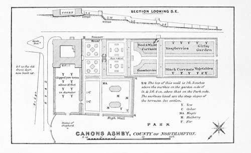

Gardening Under William And Mary. Part 2
Description
This section is from the book "A History Of Gardening In England", by Alicia Amherst. Also available from Amazon: A History Of Gardening In England.
Gardening Under William And Mary. Part 2
At Sir John St. Barbe's house, near Rumsey, new gardens were also being made—" not finish'd but will be very ffine, wth Large Gates open to the Grounds beyond, some of wch are planted with trees." Such walls with " severall places with grates to Look through," was the latest development of the craving to look beyond the garden, which we have noticed in earlier times. Such arrangement of spaces, with gates or iron bars, in the walls, is constantly noticeable in the views of gardens early in the eighteenth century. This desire to extend the view, led to the planning of the park and avenues to correspond with the open spaces at the side or end of the garden walks. These attempts to harmonize the garden with its surroundings, gradually developed, until the walls were dispensed with, and the " landscape" style superseded the older forms. In studying the changes in design, it seems to me that there was no sudden " leaping the garden wall." We must look for the beginnings of the landscape style in the gradual change or decadence of the old formal school. The Dutch style, introduced by William III., was an exaggeration of the old manner of clipping trees. Topiary work in yew, box, and other "greens," was carried to such an excess ; the gardens were so overcrowded with cut trees, as to become the laughing-stock of the succeeding generation, and so bring about their own destruction.
The word "knot" does not often occur in books of this date, and the word " parterre," which takes its place, requires some explanation. Meager, in the English Gardener, 1688, gives a list of herbs "fit to set knots with," of which "Dutch or French Box, it is the handsomest, the most durable, and the cheapest to keep." And in the same chapter, he refers his reader to the plates at the end of the book, where he has " presented to view divers forms or plots for gardens." In 1697, he speaks of parterres, and his designs are very similar. Sir Thomas Hanmer, in notes for his proposed work on gardening, also uses the two words :—" If the ground be spacious, the next adjacent quarters or parterres, as the French call them, are often of fine turf, but as low as any green to bowl on; cut out curiously into embroidery of flowers, and shapes of arabesques, animals, or birds, or feuillages, and the small alleys or intervals filled with several coloured sands and dust with much art, with but few flowers in such knots, and those only such as grow very low lest they spoil the beauty of the embroidery." Parterre is thus explained in Miller's Dictionary, 1724: " A level division of ground, which for the most part faces the South, and is best in front of a House, and is generally furnished with greens and flowers. There are several sorts of parterres, as bowling-green, or plain parterres, and parterres of embroidery .... Plain parterres most beautiful in England by reason of their turf, and that decency and unaffected simplicity it affords the eye; others are cut into shell and scroll-work, with sand alleys between them, which are the finest parterre works esteemed in England".
Parterre. from london and wise.
In the Retired Gardener, translated from the French of Louis Liger, by London and Wise, no less than eleven sorts of parterres are described, but all are merely variations of design in grass, beds or cut-work, and patterns of scrolls and foliage or "embroidery, like we have on our cloaths." The two following are examples of his descriptions : No. VI. "The Form of a Parterre partly cut-work and partly green Turf with Borders. These Parterres are esteem'd according to their Design and their Symmetry. They look very well in great gardens as well as small, the verdure of the grass, and the Enamel of the Flowers with which the Compartments ought to be fill'd according to the different seasons of the year, present a charming object to the sight. These parterres may likewise be set off with such Pots as I mentioned before (i.e. Dutch jars) or surrounded with Boxes fill'd with Orange Trees or with other shrubs of like Nature." VII. "The Form of a Parterre with cut-work of Grass and Imbroidery in the middle and with Borders of Grass on the outsides. This sort of Design is very agreeable and serves for a great ornament to a garden, especially where the grass-work is well kept up, the Box well order'd, and the grass-work well cut; and to give it yet a farther Beauty, you may fill the Flourishings and Branch-work with a black earth, provided the Paths or Alleys be cover'd with a yellow or white sand, different colours serving to set off the Parterre the better." In some cases the plot was filled with one design, in others it was divided into four, and the pattern repeated in each section.
Parterre. from london and wise.
Between the parterres were borders, formed either of a sanded path with a strip of grass or flowers, on either side, or shrubs placed at intervals, but the " most common " borders " are wrought with a sharp rising in the middle, like the back of an ass, and set with yews, shrubs, and flowers." Canons Ashby, as it is at the present day, is a good example of th's date of garden, and the parterres, as shown in the plan kindly made by the present owner, Sir Henry Dryden, are such as might have been seen in any garden of this date, though the design perhaps is more simple than in many of them. The garden, originally made in 1550, was altered in 1708, and has defied the changes of fashion for nearly two centuries. It is just such a garden as Celia Fiennes described as " neatly kept, with fine gravel walks, grass-plotts and beyond a garden of flower-trees and all sorts of herbage and store of fruits".
Incidental remarks in that lady's journal, throw light upon Town-gardening. Before such great difficulties in the way of smoke had to be contended with, town-gardens needed no more care than country ones, and many town-houses had fine ones attached to them. When gardens were simple, small, and enclosed, there was no reason why as pleasant and secluded ones should not be made in towns as in the open country. We still find old-fashioned gardens in the Cathedral towns, or in some few large market-towns, where smoke and overcrowding have not destroyed them. But long ago, when each good house had its garden, the aspect of the towns must indeed have been different. Public parks and gardens are no new invention, although so vastly improved even of late years, in spite of all the disadvantages of fog, smoke, and darkness. Certainly from Cowley's poem one would imagine the smoke nuisance to have been as troublesome in the middle of the seventeenth, as at the end of the nineteenth century :

Continue to:
- prev: Chapter X. Gardening Under William And Mary
- Table of Contents
- next: Gardening Under William And Mary. Part 3